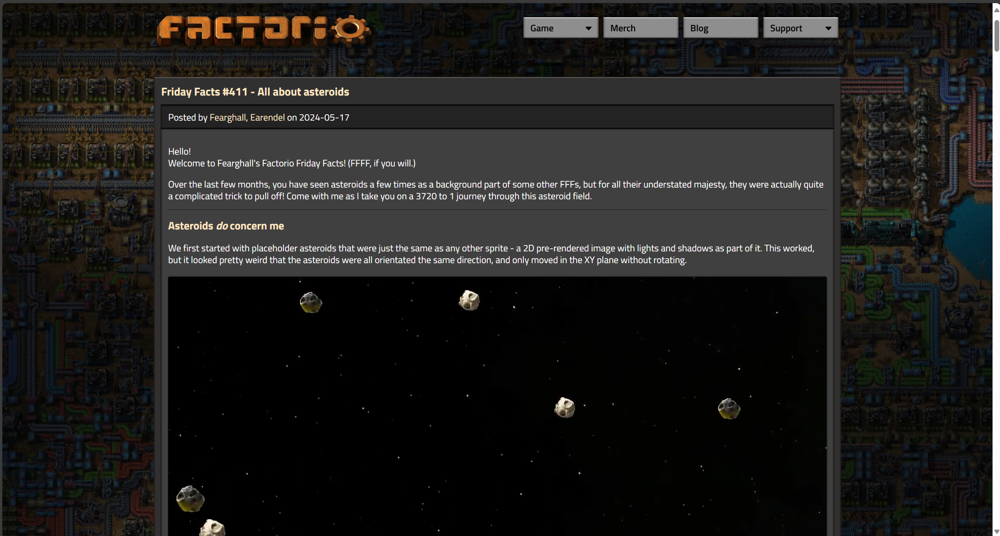

Making a
|[custom] blogOne optional, but useful, part of any project is recording the process.
I have always tried to do this, with varying amounts of success, and varying amounts of effort, and with varying medians, with my most recent median being discord.
Since discord is not a place designed to be used for blogs, it lacks a lot of aspects I would want for a blog, things like:
* A lack of any good way to insert media throughout a message.
* A very limiting file size for anything uploaded.
* No way of adding colored text.
* Very limited formatting.
* No way to embed live code.
* No good way to share posts.
* No guarantee that the posts wouldn't be removed.
And no way to change any of this.So I decided to make my own blogBut this comes with a lot of challenges too:
* How am I going to model this blog?
* What do I want the process of creating a post to look like?
* What all do I want a post to be capable of?
* Whats going to tie all the posts together?
* Have I fed my cat yet?
* How am I going to publish this blog?
Some of there questions have easy answers:
* What do I want the process of creating a post to look like? I want to write text as markup in a text file, putting links to media in the text as needed, and just putting all the media and text in a folder and having it automatically generate a post.
* Whats going to tie all the posts together? A home page with previews of each post that can be clicked to open them.
* Have I fed my cat yet? Yes, though she says otherwise.
* How am I going to publish this blog? I can just push to github, then use Vercel to host the site.
Starting off I wanted to use a new design for project: processing all the posts on my local machine, then only publishing the translated files, seeing as this needs file manipulation to do (since all the files for the finished website would be generated by other code), and I am most familiar with JS, node seemed like the logical choice for a base.
Time to start: I make a script to scan all the files in a specific folder for posts, processing them all slightly to format them for html, putting them together in a folder, and pushing them to github...
I had forgot an important step: before I can have posts I need a home page to get to the posts from.
But I wanted this page to look nice, and not just be an empty page of links, so I looked around for inspiration, and I found this:
And look at it: a nice title section, a consistent color scheme, inline images, and (not shown) videos!
But more importantly, the background, it ties the post together without making it feel like it consumes all the screen space, plus with an already semi vertical design making this site work on mobile will be much easier.
Now that I had a layout I needed a background, for the factorio example a factory in the background is in theme, but for my blog the topic changes, I can't just have an image of a finished project (or I could but I don't like the idea of that), I wanted something relevant to all my projects.
But what do all my projects have in common?Programming. I knew what I wanted:
Live backgrounds
What is a live background? For my use cases a live background is any background that is not pre generated, but is instead has a small program running to generate the background live.
Planning: what power did I want to give these backgrounds? How do I want to structure them? And how do I want to theme them?
Next I created a simple system to create live backgrounds thats answers these questions:
* Each background is a js module.
* The backgrounds render on a canvas element set behind all the websites content.
* Each background exports a
* Each background grabs the canvas and context each time it's start function is ran.
* A central script schedules starting and stopping each background, as well as mixing them to ensure each one gets the appropriate screen time.
And while this was nice, the system had its problems:
* Since each background was in charge of keeping a loop, when I ended one background and started a new one, sometimes the old background would run one more loop.
* It had too much repeated code for each background.
* With each background grabbing the canvas and context every time they start, it could sometimes lead to bugs where one background would have the context when another background tried to use it.
While this isn't a lot of bugs, it really killed the polished feel I wanted, with small bugs happening frequently, so I needed a new system:
* Each background is still a js module.
* The backgrounds still render on a background canvas.
* Each background exports a
* Each background is given the canvas and context through its exposed functions.
* Instead of a background creating its own loop, the central script is in charge of updating the background each frame.
With just these small changes, the backgrounds ran smoothly, with no issues with them running when they shouldn't.
They were done.
Planning: what power did I want to give these backgrounds? How do I want to structure them? And how do I want to theme them?
Next I created a simple system to create live backgrounds thats answers these questions:
* Each background is a js module.
* The backgrounds render on a canvas element set behind all the websites content.
* Each background exports a
start and a stop function.* Each background grabs the canvas and context each time it's start function is ran.
* A central script schedules starting and stopping each background, as well as mixing them to ensure each one gets the appropriate screen time.
And while this was nice, the system had its problems:
* Since each background was in charge of keeping a loop, when I ended one background and started a new one, sometimes the old background would run one more loop.
* It had too much repeated code for each background.
* With each background grabbing the canvas and context every time they start, it could sometimes lead to bugs where one background would have the context when another background tried to use it.
While this isn't a lot of bugs, it really killed the polished feel I wanted, with small bugs happening frequently, so I needed a new system:
* Each background is still a js module.
* The backgrounds still render on a background canvas.
* Each background exports a
start, update, and a stop function.* Each background is given the canvas and context through its exposed functions.
* Instead of a background creating its own loop, the central script is in charge of updating the background each frame.
With just these small changes, the backgrounds ran smoothly, with no issues with them running when they shouldn't.
They were done.
Want to see more?
|[click to open]
-------------------------
Now that I had backgrounds and website structure, it was time for the hard part:
Making the markup
But what is markup?
Markup is the way I can write with text with formatting, it's how I can do this
When I used discord there were a few different ways to write markup, there was *italic*, **bold**, ***bold italic***, ~~strikethrough~~, or
``code``.But that style can cause problems, sometimes when sending text not designed for discords formatting there would be unwanted markup, and there was no good to remember what markup does what, so I needed my own style: and I like the "tags" method: where my markup is broken into two types, text and tag groups: "|[tag1 tag2 tag3] and text", this way I can have whatever I want to be tags as tags, without having to worry about using symbols or patterns used in the regular text.
The only thing I have to worry about is what symbols to use to open and close a group of tags, and since I wanted something visually compact, I decided on |[ to open and ] to close, with the only restriction on the tags being that they cannot contain either the opening or closing symbols.
Time for an example:
|[align center size large]Before |[color #0f0]green|[color] it was boring
Would become:
Before green it was boring
How does it work?
1 The markup file (which is just stored as plaintext) is read and turned into one long string, removing any line breaks.
2 The string is split by at each "|[" unless the symbol directly after is a "|" (so to write "|[", I would write "|[|").
3 Each slice of the string is split at the first "]".
4 Each slice within a |[] gets split at each " ", resulting in an array of each word inside the tag group.
5 The array of arrays gets flattened, resulting in an array of items that are each either an array of tags, or a string.
6 The items are looped through, if the item is a string, a styled span element gets pushed to the html with the text of the item, otherwise each tag is looped through, applying its effects.
7 The finished html is returned, with the default styles, any needed scripts, and the translated markup inside.
Now for my favorite feature of the markup:
This means I can run arbitrary js code anywhere throughout the posts, with each of them able to create a canvas or other html elements for rendering or inputting.
And arbitrary code means I can change any aspect of the website, like adding the flickering text above, , or text that changes the background color when clicked? And so much more
(Of course there are many other small steps in translating markup, and many other features with it, but if I explained every aspect of the code this post would be far too long, however if you are interested in what tags I have created, I have included all the ones I have created at the time of writing this post below)
|[click to open]
-------------------------
At this point I could be done, the website is fully functional, it supports a rich markup, and it has the theme I was wanting.
But why stop there?
There's always stuff to add...
Link previews
There's always stuff to add...
Link previews
|[click to open]
-------------------------
Live post previews
Live post previews
|[click to open]
-------------------------
Now there are a lot more features I want to add, comments, a downloadable app, vscode support for highlighting, a markup editor with a gui, etc, but I've spent too long on this post and have other things to work on.
That's it for todays post, thanks for reading!
Now there are a lot more features I want to add, comments, a downloadable app, vscode support for highlighting, a markup editor with a gui, etc, but I've spent too long on this post and have other things to work on.
That's it for todays post, thanks for reading!
Return to top